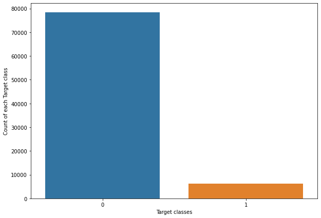
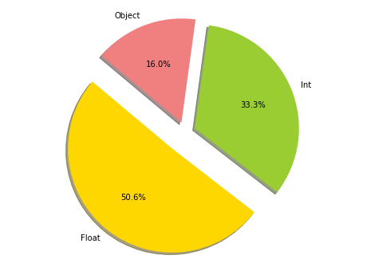
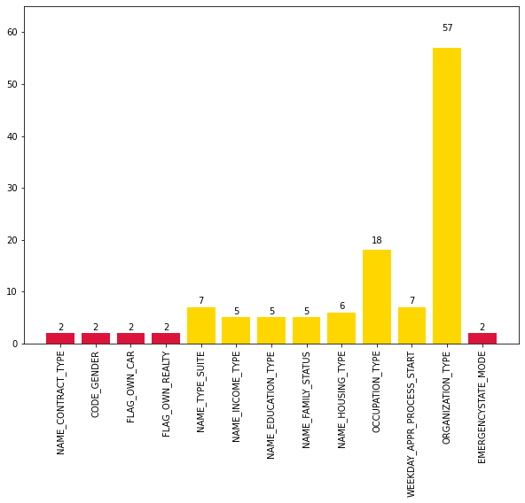

APPLICATIONS OF BIG DATA - HOME CREDIT DEFAULT RISK¶
https://www.kaggle.com/c/home-credit-default-risk/data
About the Data¶
The application_train & application_test informe us about each loan application at Home Credit. Every loan has its own row and is identified by the feature SK_ID_CURR.
The application_train dataset comes with the TARGET column indicating (0: the loan was repaid | 1: the loan was not repaid)
LIBRARIES¶
[1]:
import os
import warnings
warnings.filterwarnings('ignore')
import sys
import pandas as pd
import numpy as np
import matplotlib.pyplot as plt
import seaborn as sns
from sklearn.preprocessing import LabelEncoder
import mlflow
import mlflow.sklearn
DATASETS¶
[45]:
url_test = "C:/Users/carol/Google Drive/BIG DATA/S9/APPLICATIONS OF BIG DATA/ML_PROJECT/Data/application_test.csv"
url_train = "C:/Users/carol/Google Drive/BIG DATA/S9/APPLICATIONS OF BIG DATA/ML_PROJECT/Data/application_train.csv"
application_test = pd.read_csv(url_test)
application_train = pd.read_csv(url_train)
C:\Users\carol\anaconda3\envs\ML_conda_env\lib\site-packages\ipykernel\ipkernel.py:287: DeprecationWarning: `should_run_async` will not call `transform_cell` automatically in the future. Please pass the result to `transformed_cell` argument and any exception that happen during thetransform in `preprocessing_exc_tuple` in IPython 7.17 and above.
and should_run_async(code)
[46]:
application_train.head()
[46]:
| SK_ID_CURR | TARGET | NAME_CONTRACT_TYPE | CODE_GENDER | FLAG_OWN_CAR | FLAG_OWN_REALTY | CNT_CHILDREN | AMT_INCOME_TOTAL | AMT_CREDIT | AMT_ANNUITY | ... | FLAG_DOCUMENT_18 | FLAG_DOCUMENT_19 | FLAG_DOCUMENT_20 | FLAG_DOCUMENT_21 | AMT_REQ_CREDIT_BUREAU_HOUR | AMT_REQ_CREDIT_BUREAU_DAY | AMT_REQ_CREDIT_BUREAU_WEEK | AMT_REQ_CREDIT_BUREAU_MON | AMT_REQ_CREDIT_BUREAU_QRT | AMT_REQ_CREDIT_BUREAU_YEAR | |
|---|---|---|---|---|---|---|---|---|---|---|---|---|---|---|---|---|---|---|---|---|---|
| 0 | 100002 | 1 | Cash loans | M | N | Y | 0 | 202500.0 | 406597.5 | 24700.5 | ... | 0 | 0 | 0 | 0 | 0.0 | 0.0 | 0.0 | 0.0 | 0.0 | 1.0 |
| 1 | 100003 | 0 | Cash loans | F | N | N | 0 | 270000.0 | 1293502.5 | 35698.5 | ... | 0 | 0 | 0 | 0 | 0.0 | 0.0 | 0.0 | 0.0 | 0.0 | 0.0 |
| 2 | 100004 | 0 | Revolving loans | M | Y | Y | 0 | 67500.0 | 135000.0 | 6750.0 | ... | 0 | 0 | 0 | 0 | 0.0 | 0.0 | 0.0 | 0.0 | 0.0 | 0.0 |
| 3 | 100006 | 0 | Cash loans | F | N | Y | 0 | 135000.0 | 312682.5 | 29686.5 | ... | 0 | 0 | 0 | 0 | NaN | NaN | NaN | NaN | NaN | NaN |
| 4 | 100007 | 0 | Cash loans | M | N | Y | 0 | 121500.0 | 513000.0 | 21865.5 | ... | 0 | 0 | 0 | 0 | 0.0 | 0.0 | 0.0 | 0.0 | 0.0 | 0.0 |
5 rows × 122 columns
[47]:
application_test.head()
C:\Users\carol\anaconda3\envs\ML_conda_env\lib\site-packages\ipykernel\ipkernel.py:287: DeprecationWarning: `should_run_async` will not call `transform_cell` automatically in the future. Please pass the result to `transformed_cell` argument and any exception that happen during thetransform in `preprocessing_exc_tuple` in IPython 7.17 and above.
and should_run_async(code)
[47]:
| SK_ID_CURR | NAME_CONTRACT_TYPE | CODE_GENDER | FLAG_OWN_CAR | FLAG_OWN_REALTY | CNT_CHILDREN | AMT_INCOME_TOTAL | AMT_CREDIT | AMT_ANNUITY | AMT_GOODS_PRICE | ... | FLAG_DOCUMENT_18 | FLAG_DOCUMENT_19 | FLAG_DOCUMENT_20 | FLAG_DOCUMENT_21 | AMT_REQ_CREDIT_BUREAU_HOUR | AMT_REQ_CREDIT_BUREAU_DAY | AMT_REQ_CREDIT_BUREAU_WEEK | AMT_REQ_CREDIT_BUREAU_MON | AMT_REQ_CREDIT_BUREAU_QRT | AMT_REQ_CREDIT_BUREAU_YEAR | |
|---|---|---|---|---|---|---|---|---|---|---|---|---|---|---|---|---|---|---|---|---|---|
| 0 | 100001 | Cash loans | F | N | Y | 0 | 135000.0 | 568800.0 | 20560.5 | 450000.0 | ... | 0 | 0 | 0 | 0 | 0.0 | 0.0 | 0.0 | 0.0 | 0.0 | 0.0 |
| 1 | 100005 | Cash loans | M | N | Y | 0 | 99000.0 | 222768.0 | 17370.0 | 180000.0 | ... | 0 | 0 | 0 | 0 | 0.0 | 0.0 | 0.0 | 0.0 | 0.0 | 3.0 |
| 2 | 100013 | Cash loans | M | Y | Y | 0 | 202500.0 | 663264.0 | 69777.0 | 630000.0 | ... | 0 | 0 | 0 | 0 | 0.0 | 0.0 | 0.0 | 0.0 | 1.0 | 4.0 |
| 3 | 100028 | Cash loans | F | N | Y | 2 | 315000.0 | 1575000.0 | 49018.5 | 1575000.0 | ... | 0 | 0 | 0 | 0 | 0.0 | 0.0 | 0.0 | 0.0 | 0.0 | 3.0 |
| 4 | 100038 | Cash loans | M | Y | N | 1 | 180000.0 | 625500.0 | 32067.0 | 625500.0 | ... | 0 | 0 | 0 | 0 | NaN | NaN | NaN | NaN | NaN | NaN |
5 rows × 121 columns
PART 1: ML Models¶
First, I will try to know th percentage of each column and sort it by descending on application_train and application_test.
Then I dropped columns having percent > 50
application_train
[48]:
#Test the application_train set
def missing_values_table(df):
mis_val = df.isnull().sum()
mis_val_percent = 100 * df.isnull().sum() / len(df)
mis_val_table = pd.concat([mis_val, mis_val_percent], axis=1)
mis_val_table_ren_columns = mis_val_table.rename(
columns = {0 : 'Missing Values', 1 : '% of Total Values'})
mis_val_table_ren_columns = mis_val_table_ren_columns[
mis_val_table_ren_columns.iloc[:,1] != 0].sort_values(
'% of Total Values', ascending=False).round(1)
return mis_val_table_ren_columns
missing_values_table_train = missing_values_table(application_train)
display(missing_values_table_train.head(10))
print("-----------------------------------------------------------------------------")
print()
print ("Your selected dataframe has " + str(application_train.shape[1]) + " columns.\n"
"There are " + str(missing_values_table_train.shape[0]) +
" columns that have missing values.")
C:\Users\carol\anaconda3\envs\ML_conda_env\lib\site-packages\ipykernel\ipkernel.py:287: DeprecationWarning: `should_run_async` will not call `transform_cell` automatically in the future. Please pass the result to `transformed_cell` argument and any exception that happen during thetransform in `preprocessing_exc_tuple` in IPython 7.17 and above.
and should_run_async(code)
| Missing Values | % of Total Values | |
|---|---|---|
| COMMONAREA_MEDI | 214865 | 69.9 |
| COMMONAREA_AVG | 214865 | 69.9 |
| COMMONAREA_MODE | 214865 | 69.9 |
| NONLIVINGAPARTMENTS_MEDI | 213514 | 69.4 |
| NONLIVINGAPARTMENTS_MODE | 213514 | 69.4 |
| NONLIVINGAPARTMENTS_AVG | 213514 | 69.4 |
| FONDKAPREMONT_MODE | 210295 | 68.4 |
| LIVINGAPARTMENTS_MODE | 210199 | 68.4 |
| LIVINGAPARTMENTS_MEDI | 210199 | 68.4 |
| LIVINGAPARTMENTS_AVG | 210199 | 68.4 |
-----------------------------------------------------------------------------
Your selected dataframe has 122 columns.
There are 67 columns that have missing values.
[49]:
dropped_elmt_train = missing_values_table_train[missing_values_table_train['% of Total Values'] > 50].index
application_train.drop(dropped_elmt_train, axis=1, inplace=True)
print()
print ("Your selected dataframe has now " + str(application_train.shape[1]) + " columns.\n"
"There are " + str(dropped_elmt_train.shape[0]) +
" columns dropped.")
Your selected dataframe has now 81 columns.
There are 41 columns dropped.
C:\Users\carol\anaconda3\envs\ML_conda_env\lib\site-packages\ipykernel\ipkernel.py:287: DeprecationWarning: `should_run_async` will not call `transform_cell` automatically in the future. Please pass the result to `transformed_cell` argument and any exception that happen during thetransform in `preprocessing_exc_tuple` in IPython 7.17 and above.
and should_run_async(code)
[50]:
#There are more F gender in the column, so I decide to replace XNA by F gender
display(application_train['CODE_GENDER'].value_counts())
print()
print("-----------------------------------------------------------------------------")
print()
application_train['CODE_GENDER'] = application_train['CODE_GENDER'].replace('XNA', 'F')
display(application_train['CODE_GENDER'].value_counts())
C:\Users\carol\anaconda3\envs\ML_conda_env\lib\site-packages\ipykernel\ipkernel.py:287: DeprecationWarning: `should_run_async` will not call `transform_cell` automatically in the future. Please pass the result to `transformed_cell` argument and any exception that happen during thetransform in `preprocessing_exc_tuple` in IPython 7.17 and above.
and should_run_async(code)
F 202448
M 105059
XNA 4
Name: CODE_GENDER, dtype: int64
-----------------------------------------------------------------------------
F 202452
M 105059
Name: CODE_GENDER, dtype: int64
application_test
[51]:
#Test the application_train set
def missing_values_table(df):
mis_val = df.isnull().sum()
mis_val_percent = 100 * df.isnull().sum() / len(df)
mis_val_table = pd.concat([mis_val, mis_val_percent], axis=1)
mis_val_table_ren_columns = mis_val_table.rename(
columns = {0 : 'Missing Values', 1 : '% of Total Values'})
mis_val_table_ren_columns = mis_val_table_ren_columns[
mis_val_table_ren_columns.iloc[:,1] != 0].sort_values(
'% of Total Values', ascending=False).round(1)
return mis_val_table_ren_columns
missing_values_table_test = missing_values_table(application_test)
display(missing_values_table_test.head(10))
print("-----------------------------------------------------------------------------")
print()
print ("Your selected dataframe has " + str(application_test.shape[1]) + " columns.\n"
"There are " + str(missing_values_table_test.shape[0]) +
" columns that have missing values.")
| Missing Values | % of Total Values | |
|---|---|---|
| COMMONAREA_MODE | 33495 | 68.7 |
| COMMONAREA_MEDI | 33495 | 68.7 |
| COMMONAREA_AVG | 33495 | 68.7 |
| NONLIVINGAPARTMENTS_MEDI | 33347 | 68.4 |
| NONLIVINGAPARTMENTS_AVG | 33347 | 68.4 |
| NONLIVINGAPARTMENTS_MODE | 33347 | 68.4 |
| FONDKAPREMONT_MODE | 32797 | 67.3 |
| LIVINGAPARTMENTS_MODE | 32780 | 67.2 |
| LIVINGAPARTMENTS_MEDI | 32780 | 67.2 |
| LIVINGAPARTMENTS_AVG | 32780 | 67.2 |
-----------------------------------------------------------------------------
Your selected dataframe has 121 columns.
There are 64 columns that have missing values.
[52]:
dropped_elmt_test = missing_values_table_test[missing_values_table_test['% of Total Values'] > 50].index
application_test.drop(dropped_elmt_test, axis=1, inplace=True)
print()
print ("Your selected dataframe has now " + str(application_test.shape[1]) + " columns.\n"
"There are " + str(dropped_elmt_test.shape[0]) +
" columns dropped.")
C:\Users\carol\anaconda3\envs\ML_conda_env\lib\site-packages\ipykernel\ipkernel.py:287: DeprecationWarning: `should_run_async` will not call `transform_cell` automatically in the future. Please pass the result to `transformed_cell` argument and any exception that happen during thetransform in `preprocessing_exc_tuple` in IPython 7.17 and above.
and should_run_async(code)
Your selected dataframe has now 92 columns.
There are 29 columns dropped.
Align the datasets
[53]:
#application_train = pd.read_csv(url_train)
TARGET = application_train['TARGET']
application_train.drop('TARGET', axis=1, inplace=True)
print("Shape before align the data")
print()
print("-> Train Shape :", application_train.shape)
print("-> Test Shape :", application_test.shape)
print()
print('_____________________________________________________________________________________________')
print()
#-------------------------------------------------------------------------------
#Here, I align the train set and test to have the same columns
app_train, app_test = application_train.align(application_test, join='inner', axis=1)
app_train['TARGET'] = TARGET
print("Shape after align the data")
print()
print("-> Train Shape :", app_train.shape)
print("-> Test Shape :", app_test.shape)
Shape before align the data
-> Train Shape : (307511, 80)
-> Test Shape : (48744, 92)
_____________________________________________________________________________________________
Shape after align the data
-> Train Shape : (307511, 81)
-> Test Shape : (48744, 80)
C:\Users\carol\anaconda3\envs\ML_conda_env\lib\site-packages\ipykernel\ipkernel.py:287: DeprecationWarning: `should_run_async` will not call `transform_cell` automatically in the future. Please pass the result to `transformed_cell` argument and any exception that happen during thetransform in `preprocessing_exc_tuple` in IPython 7.17 and above.
and should_run_async(code)
Drop row missing values
[54]:
#The result in the previous lign shows that there are some missing values in the data
#So I decide to drop row
print("Shape before removing missing values on row")
print()
print("-> Train Shape :", app_train.shape)
print("-> Test Shape :", app_test.shape)
app_train.dropna(inplace=True)
app_test.dropna(inplace=True)
print()
print('_____________________________________________________________________________________________')
print()
print("Shape after removing missing values")
print()
print("-> Train Shape :", app_train.shape)
print("-> Test Shape :", app_test.shape)
Shape before removing missing values on row
-> Train Shape : (307511, 81)
-> Test Shape : (48744, 80)
_____________________________________________________________________________________________
Shape after removing missing values
-> Train Shape : (84575, 81)
-> Test Shape : (13858, 80)
[13]:
#First, I will take a look at the TARGET column on application_train set
target = app_train.TARGET.value_counts()
plt.figure(figsize=(10,7))
sns.countplot(x=app_train.TARGET ,data=app_train, )
plt.xlabel("Target classes")
plt.ylabel("Count of each Target class")
plt.show()
C:\Users\carol\anaconda3\envs\ML_conda_env\lib\site-packages\ipykernel\ipkernel.py:287: DeprecationWarning: `should_run_async` will not call `transform_cell` automatically in the future. Please pass the result to `transformed_cell` argument and any exception that happen during thetransform in `preprocessing_exc_tuple` in IPython 7.17 and above.
and should_run_async(code)

[55]:
# Here, I will take a look at the columns types of the dataset.
t = app_train.dtypes.value_counts()
display(t)
dt = pd.DataFrame(t, columns=['values'])
dt.reset_index(drop = True, inplace = True)
labels = ['Float', 'Int', 'Object']
sizes = dt["values"]
colors = ['gold', 'yellowgreen', 'lightcoral']
explode = (0.2, 0.1, 0.1) # explode 1st slicce
# Plot
plt.figure(figsize=(8,6))
plt.pie(sizes, explode=explode, labels=labels, colors=colors,
autopct='%1.1f%%', shadow=True, startangle=140)
plt.axis('equal')
plt.show()
C:\Users\carol\anaconda3\envs\ML_conda_env\lib\site-packages\ipykernel\ipkernel.py:287: DeprecationWarning: `should_run_async` will not call `transform_cell` automatically in the future. Please pass the result to `transformed_cell` argument and any exception that happen during thetransform in `preprocessing_exc_tuple` in IPython 7.17 and above.
and should_run_async(code)
int64 41
float64 27
object 13
dtype: int64

[56]:
#I will highlight the columns
#print(application_train.select_dtypes(include=['object']))
#As we can see, there are 13,1 % of objects columns. Most Machine Learning can not deal with object type, so we need to
#do something in order to able use it .
f = app_train.select_dtypes(include=['object']).apply(pd.Series.nunique, axis = 0)
#print(f)
d = pd.DataFrame(f, columns=['values'])
fig, ax = plt.subplots(figsize=(10,7))
bar_x = [1,2,3,4,5,6,7,8,9,10,11,12,13]
bar_height = d['values']
bar_tick_label = d.index
bar_label = d['values']
bar_color = ["crimson","crimson","crimson","crimson","gold","gold",
"gold","gold","gold","gold","gold", "gold","crimson"]
bar_plot = plt.bar(bar_x, bar_height, tick_label=bar_tick_label, color=bar_color)
def autolabel(rects):
for idx, rect in enumerate(bar_plot):
height = rect.get_height()
ax.text(rect.get_x() + rect.get_width()/2., 1.05*height,
bar_label[idx],
ha='center', va='bottom', rotation=0)
autolabel(bar_plot)
plt.xticks(rotation=90)
plt.ylim(0, 65)
plt.show()

[16]:
#Here, we have two categorical variables types, fisrt with 2 unique categories and the second more than 2 categories
#1. LabelEncoder
#application_train = pd.read_csv(url_train)
def LE (data):
Label = LabelEncoder()
for col in data:
if data[col].dtype == 'object':
if len(list(data[col].unique())) <= 2 :
Label.fit(data[col])
data[col] = Label.transform(data[col])
return data
#2. One-Hot-encoding
def OHE(df):
categorie_variable_column = []
for col in df:
if df[col].dtype == 'object':
if len(list(df[col].unique())) > 2 :
categorie_variable_column.append(col)
one_hot_encoding = df.loc[:, categorie_variable_column]
df = df.drop(categorie_variable_column, axis = 1)
df1 = pd.get_dummies(one_hot_encoding)
df_new = df.merge(df1, left_index=True, right_index = True)
print("-> Shape :", df_new.shape)
return df_new
[57]:
print("Shape before the labelization")
print("-> Train shape :", app_train.shape)
print("-> Test shape :", app_test.shape)
print()
print('_____________________________________________________________________________________________')
print()
print("Shape after the labelization")
#Application train dataset
app_train_LE = LE(app_train)
app_train_ = OHE(app_train_LE)
#Application test dataset
app_test_LE = LE(app_test)
app_test_ = OHE(app_test_LE)
#As we want the train set and test to have the same columns
labels = app_train_['TARGET']
app_train, app_test = app_train_.align(app_test_, join='inner', axis=1)
app_train['TARGET'] = labels
print()
print('_____________________________________________________________________________________________')
print()
print("Shape after align the datasets to have the same columns")
print("-> Train shape :", app_train.shape)
print("-> Test shape :", app_test.shape)
Shape before the labelization
-> Train shape : (84575, 81)
-> Test shape : (13858, 80)
_____________________________________________________________________________________________
Shape after the labelization
-> Shape : (84575, 183)
-> Shape : (13858, 179)
_____________________________________________________________________________________________
Shape after align the datasets to have the same columns
-> Train shape : (84575, 180)
-> Test shape : (13858, 179)
[18]:
from sklearn.model_selection import train_test_split
X = app_train.drop('TARGET', axis=1)
y = app_train['TARGET']
X_train, X_test, y_train, y_test = train_test_split(X, y, stratify=y, test_size=.2, random_state=42)
[58]:
from xgboost.sklearn import XGBClassifier
from sklearn.metrics import classification_report
from sklearn.metrics import accuracy_score
model_xgb = XGBClassifier(n_estimators=100, max_depth=2, learning_rate=0.1, subsample=0.5)
train_model_xgb = model_xgb.fit(X_train, y_train)
prediction_xgb = train_model_xgb.predict(X_test)
#Let's print the report.
print('Model XGboost Report')
print()
print(classification_report(y_test, prediction_xgb))
print()
print('_____________________________________________________________________________________________')
print()
#Let's use accuracy score
print("Accuracy for model : %.2f" % (accuracy_score(y_test, prediction_xgb) * 100), "%")
Model XGboost Report
precision recall f1-score support
0 0.93 1.00 0.96 15660
1 0.62 0.00 0.01 1255
accuracy 0.93 16915
macro avg 0.78 0.50 0.48 16915
weighted avg 0.90 0.93 0.89 16915
_____________________________________________________________________________________________
Accuracy for model : 92.59 %
[59]:
from sklearn.ensemble import RandomForestClassifier
model_rfc = RandomForestClassifier()
train_model_rfc = model_rfc.fit(X_train, y_train)
prediction_rfc = train_model_rfc.predict(X_test)
[60]:
print('Model Random Forest Report')
print()
print(classification_report(y_test, prediction_rfc))
print()
print('_____________________________________________________________________________________________')
print()
#Let's use accuracy score
print("Accuracy for Random Forest Model: %.2f" % (accuracy_score(y_test, prediction_rfc) * 100), "%")
C:\Users\carol\anaconda3\envs\ML_conda_env\lib\site-packages\ipykernel\ipkernel.py:287: DeprecationWarning: `should_run_async` will not call `transform_cell` automatically in the future. Please pass the result to `transformed_cell` argument and any exception that happen during thetransform in `preprocessing_exc_tuple` in IPython 7.17 and above.
and should_run_async(code)
Model Random Forest Report
precision recall f1-score support
0 0.93 1.00 0.96 15660
1 0.00 0.00 0.00 1255
accuracy 0.93 16915
macro avg 0.46 0.50 0.48 16915
weighted avg 0.86 0.93 0.89 16915
_____________________________________________________________________________________________
Accuracy for Random Forest Model: 92.58 %
[61]:
from sklearn.ensemble import GradientBoostingClassifier
model_gbc = GradientBoostingClassifier()
train_model_gbc = model_gbc.fit(X_train, y_train)
prediction_gbc = train_model_gbc.predict(X_test)
[62]:
print('Model Gradient Boosting Report')
print()
print(classification_report(y_test, prediction_gbc))
print()
print('_____________________________________________________________________________________________')
print()
#Let's use accuracy score
print("Accuracy for Random Forest Model: %.2f" % (accuracy_score(y_test, prediction_gbc) * 100), "%")
C:\Users\carol\anaconda3\envs\ML_conda_env\lib\site-packages\ipykernel\ipkernel.py:287: DeprecationWarning: `should_run_async` will not call `transform_cell` automatically in the future. Please pass the result to `transformed_cell` argument and any exception that happen during thetransform in `preprocessing_exc_tuple` in IPython 7.17 and above.
and should_run_async(code)
Model Gradient Boosting Report
precision recall f1-score support
0 0.93 1.00 0.96 15660
1 0.54 0.01 0.02 1255
accuracy 0.93 16915
macro avg 0.73 0.51 0.49 16915
weighted avg 0.90 0.93 0.89 16915
_____________________________________________________________________________________________
Accuracy for Random Forest Model: 92.59 %
PART 2: MLFlow¶
[71]:
from sklearn.metrics import mean_squared_error, mean_absolute_error, r2_score
def eval_metrics(actual, pred):
rmse = np.sqrt(mean_squared_error(actual, pred)) * 100
mae = mean_absolute_error(actual, pred) * 100
r2 = r2_score(actual, pred) * 100
return rmse, mae, r2
C:\Users\carol\anaconda3\envs\ML_conda_env\lib\site-packages\ipykernel\ipkernel.py:287: DeprecationWarning: `should_run_async` will not call `transform_cell` automatically in the future. Please pass the result to `transformed_cell` argument and any exception that happen during thetransform in `preprocessing_exc_tuple` in IPython 7.17 and above.
and should_run_async(code)
[79]:
import mlflow.xgboost
if __name__ == "__main__":
# enable auto logging
mlflow.xgboost.autolog()
#mlflow.end_run()
with mlflow.start_run():
model_xgb_mlflow = XGBClassifier(n_estimators=100, max_depth=2, learning_rate=0.1, subsample=0.5)
train_model_xgb_mlflow = model_xgb_mlflow.fit(X_train, y_train)
#Evaluation model
prediction_xgb_mlflow = train_model_xgb_mlflow.predict(X_test)
(rmse_xgb, mae_xgb, r2_xgb) = eval_metrics(y_test, prediction_xgb_mlflow)
acc_xgb = accuracy_score(y_test, prediction_xgb_mlflow) * 100
# Print out metrics
print("Metrics for XGBoost:" )
print("_______________")
print("| RMSE | %1.1f%% |" % rmse_xgb)
print("_______________")
print("| MAE | %1.1f%% |" % mae_xgb)
print("_______________")
print("| R2 | %1.1f%% |" % r2_xgb)
print("_______________")
print("| ACC | %1.1f%% |" % acc_xgb)
print("_______________")
print()
# Log parameter, metrics, and model to MLflow
mlflow.log_metric("rmse", rmse_xgb)
mlflow.log_metric("r2", r2_xgb)
mlflow.log_metric("mae", mae_xgb)
mlflow.log_metric("acc", acc_xgb)
mlflow.sklearn.log_model(model_xgb_mlflow, "model")
print("Model saved in run %s" % mlflow.active_run().info.run_uuid)
C:\Users\carol\anaconda3\envs\ML_conda_env\lib\site-packages\ipykernel\ipkernel.py:287: DeprecationWarning: `should_run_async` will not call `transform_cell` automatically in the future. Please pass the result to `transformed_cell` argument and any exception that happen during thetransform in `preprocessing_exc_tuple` in IPython 7.17 and above.
and should_run_async(code)
Metrics for XGBoost:
_______________
| RMSE | 27.2% |
_______________
| MAE | 7.4% |
_______________
| R2 | -7.8% |
_______________
| ACC | 92.6% |
_______________
Model saved in run cfb3cbd82c264b069dd43c02c5ab07aa
[81]:
from sklearn.ensemble import RandomForestClassifier
import mlflow
if __name__ == "__main__":
# enable auto logging
mlflow.sklearn.autolog()
#mlflow.end_run()
with mlflow.start_run():
model_rdf_mlflow =RandomForestClassifier()
train_model_rdf_mlflow = model_rdf_mlflow.fit(X_train, y_train)
#Evaluation model
prediction_rdf_mlflow = train_model_rdf_mlflow.predict(X_test)
(rmse_rdf, mae_rdf, r2_rdf) = eval_metrics(y_test, prediction_rdf_mlflow)
acc_rdf = accuracy_score(y_test, prediction_rdf_mlflow) * 100
# Print out metrics
print("Metrics for Random Forest:" )
print("_______________")
print("| RMSE | %1.1f%% |" % rmse_rdf)
print("_______________")
print("| MAE | %1.1f%% |" % mae_rdf)
print("_______________")
print("| R2 | %1.1f%% |" % r2_rdf)
print("_______________")
print("| ACC | %1.1f%% |" % acc_rdf)
print("_______________")
print()
# Log parameter, metrics, and model to MLflow
mlflow.log_metric("rmse", rmse_rdf)
mlflow.log_metric("r2", r2_rdf)
mlflow.log_metric("mae", mae_rdf)
mlflow.log_metric("acc", acc_rdf)
mlflow.sklearn.log_model(model_rdf_mlflow, "model")
print("Model saved in run %s" % mlflow.active_run().info.run_uuid)
C:\Users\carol\anaconda3\envs\ML_conda_env\lib\site-packages\ipykernel\ipkernel.py:287: DeprecationWarning: `should_run_async` will not call `transform_cell` automatically in the future. Please pass the result to `transformed_cell` argument and any exception that happen during thetransform in `preprocessing_exc_tuple` in IPython 7.17 and above.
and should_run_async(code)
Metrics for Random Forest:
_______________
| RMSE | 27.2% |
_______________
| MAE | 7.4% |
_______________
| R2 | -8.0% |
_______________
| ACC | 92.6% |
_______________
Model saved in run 189fa4243eb947f7a7da2ae550e771cf
[83]:
from sklearn.ensemble import GradientBoostingClassifier
import mlflow
if __name__ == "__main__":
# enable auto logging
mlflow.sklearn.autolog()
#mlflow.end_run()
with mlflow.start_run():
model_gbc_mlflow =GradientBoostingClassifier()
train_model_gbc_mlflow = model_gbc_mlflow.fit(X_train, y_train)
#Evaluation model
prediction_gbc_mlflow = train_model_gbc_mlflow.predict(X_test)
(rmse_gbc, mae_gbc, r2_gbc) = eval_metrics(y_test, prediction_rdf_mlflow)
acc_gbc = accuracy_score(y_test, prediction_gbc_mlflow) * 100
# Print out metrics
print("Metrics for Gradient Boosting:" )
print("_______________")
print("| RMSE | %1.1f%% |" % rmse_gbc)
print("_______________")
print("| MAE | %1.1f%% |" % mae_gbc)
print("_______________")
print("| R2 | %1.1f%% |" % r2_gbc)
print("_______________")
print("| ACC | %1.1f%% |" % acc_gbc)
print("_______________")
print()
# Log parameter, metrics, and model to MLflow
mlflow.log_metric("rmse", rmse_gbc)
mlflow.log_metric("r2", r2_gbc)
mlflow.log_metric("mae", mae_gbc)
mlflow.log_metric("acc", acc_gbc)
mlflow.sklearn.log_model(model_rdf_mlflow, "model")
print("Model saved in run %s" % mlflow.active_run().info.run_uuid)
Metrics for Gradient Boosting:
_______________
| RMSE | 27.2% |
_______________
| MAE | 7.4% |
_______________
| R2 | -8.0% |
_______________
| ACC | 92.6% |
_______________
Model saved in run d52c814744f64363b676dc93667d5677
PART 3: XAI with LIME Method¶
[ ]: